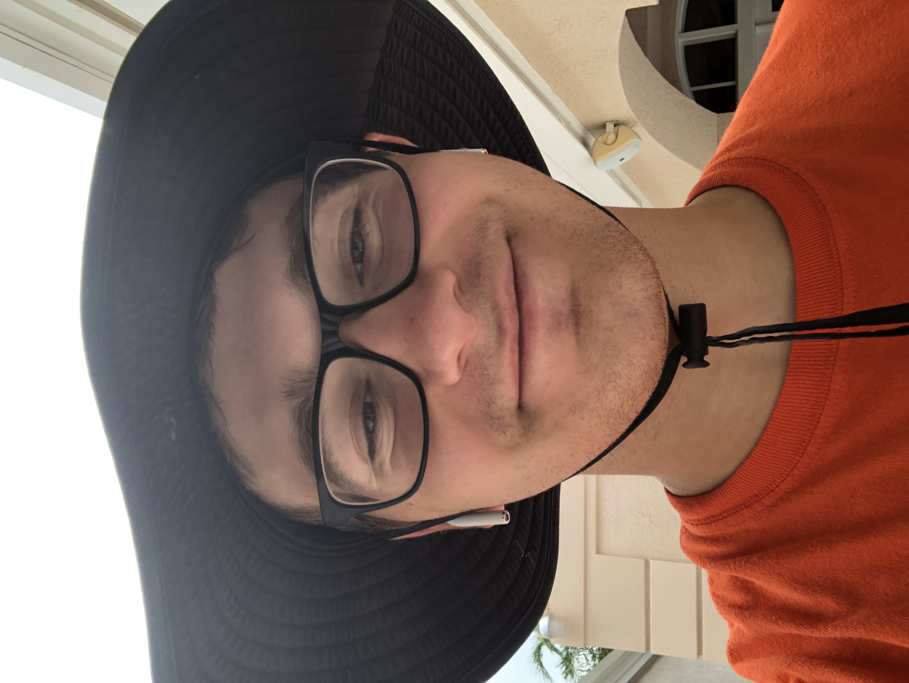
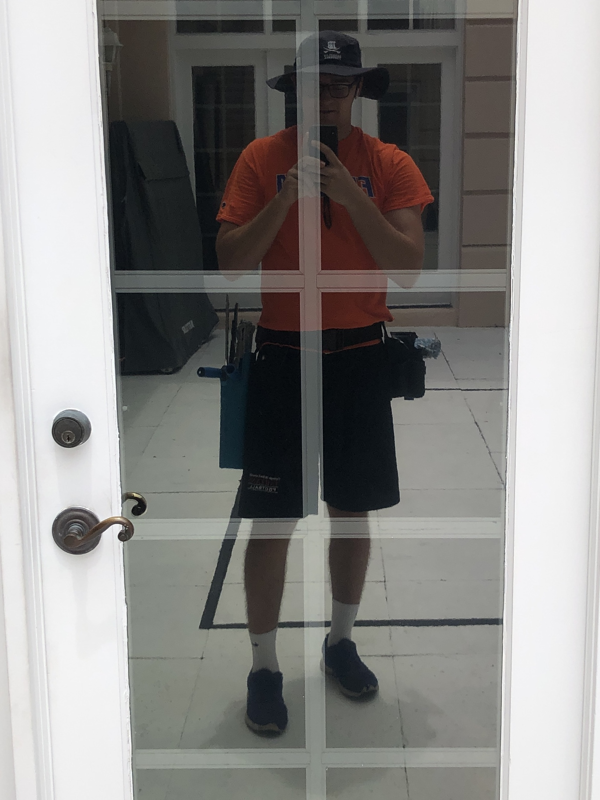
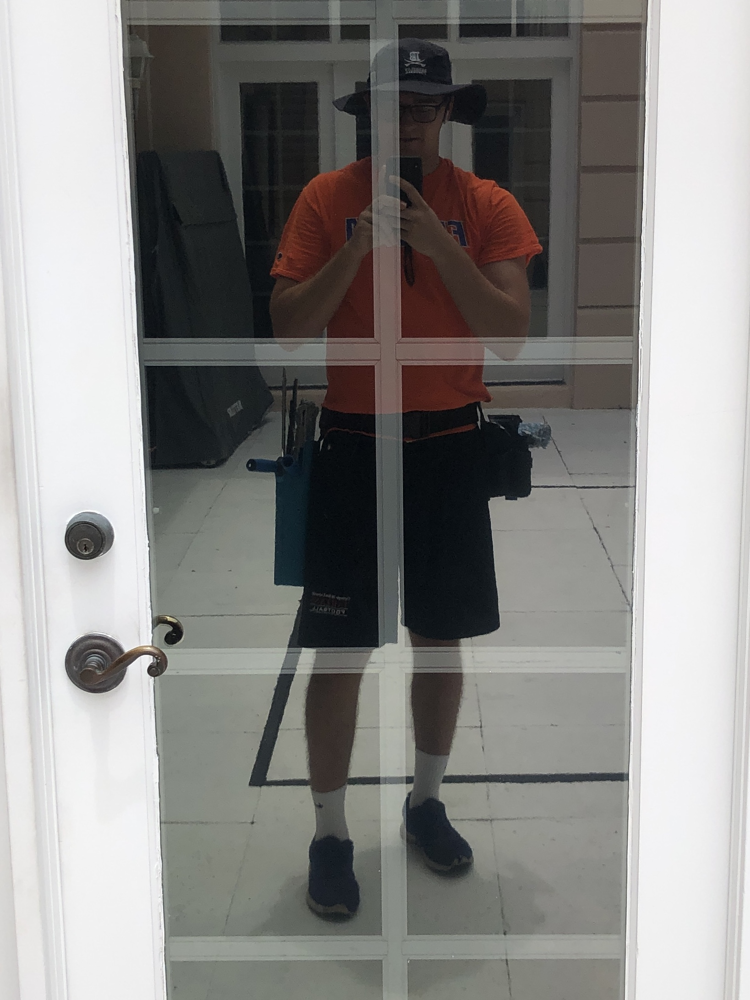

What is a business that you can start over the summer to make good money while learning a good work ethic? My answer was a window cleaning company! I started my own business and registered it as Michael's Window Cleaning LLC. It was a very enjoyable time and I learned a little bit about the value of hard work. I spent around 8 hours a day 3-4 days a week in the Florida sun while cleaning my neighbors houses' windows and local business office windows. I used mops, squeegees, extension poles, abrasive cloths for stubborn dirt, an extension ladder, and a special cleaning solution to destroy the most dirty of windows! My brother joined me on a few jobs to increase our efficiency. I purchased insurance to protect my clients, my brother, and myself. The insurance only covered up to 30 feet, so I could not clean any windows above the third floor. I had around 7 clients this summer and averaged around $600 per a job. My costs included equipment, LLC registration, monthly insurance, and wages to my brother. I really enjoyed starting this company and I look forward to starting another one soon!
Me at Work!

 
